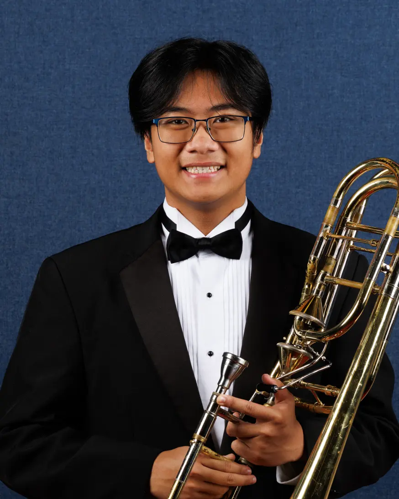

I am an All-State Bass Trombonist who has performed in many great groups, such as the TMEA Region 32 Wind Ensemble, 6A All-State Symphonic Band, the Vista Ridge Wind Ensemble, and many more. I am also a successful composer who composes and arranges my own original pieces. My works consist of a variety of ensembles and genres, such as Orchestra, chamber groups and Band/Wind Ensemble arrangements. I have composed pieces for various groups such as the Vista Ridge Trombone Ensemble, Austin Brass Collective (ABC) 2025, friends' chamber groups, the Vista Ridge Wind Ensemble and the ACC Wind Ensemble.